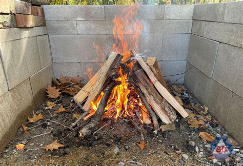
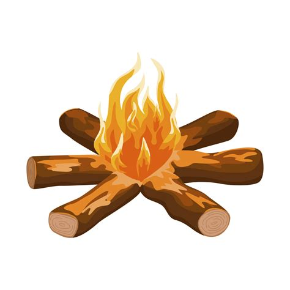
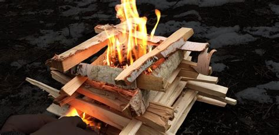
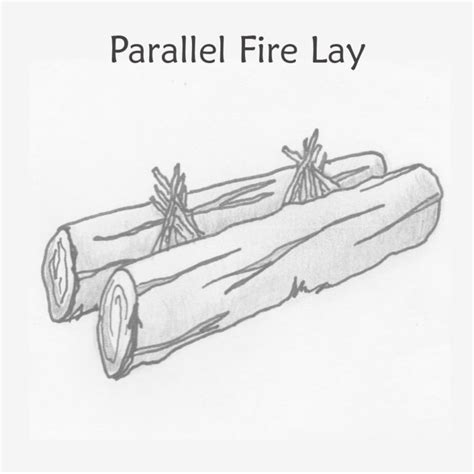

Fires - النيران
- Fires
- Cubs
- Scouts
النار في الكشافة هي نار تُشعل في الهواء الطلق، غالبًا بواسطة الكشافة، للطهي، التدفئة، الإضاءة، والتجمعات الاجتماعية. كما تُعد رمزًا للوحدة والعمل الجماعي، حيث يجتمع الكشافة حول النار للغناء، سرد القصص، والتعلم.
استخدامات النيران
- الطهي: الشوي، الغلي، أو الخبز.
- التدفئة: البقاء دافئًا خلال الليالي الباردة.
- الإضاءة: توفير الضوء في المخيم.
- الإشارة: استخدام الدخان نهارًا أو النار ليلًا للإشارة.
- الأنشطة الاجتماعية والاحتفالية: الغناء، المسرحيات القصيرة، وأنشطة بناء الفريق.
أنواع النيران
- النار الهرمية (Teepee / Pyramid) – سهلة الإشعال، شعلة قوية ومشرقة.
- النار المربعة (Log Cabin) – تدوم طويلًا وتحترق بشكل ثابت.
- النار النجمية (Star Fire) – أعواد مرتبة على شكل شعاع، تحترق ببطء وتوفر الخشب.
- النار المتوازية (Parallel Fire / نار الخندق) – أعواد مرتبة بشكل متوازي، مناسبة للطهي وإشعال نار طويلة الأمد.
كيفية إشعال النار
- اختيار مكان آمن – قم بتنظيف الأرض من الأوراق والعشب والحطام. استخدم حلقة نار أو احفر حفرة صغيرة إذا أمكن.
- جمع المواد – مادة إشعال (عشب جاف، أوراق، نشارة لحاء، قطن أو ورق)، مواد صغيرة (أعواد صغيرة بحجم القلم)، وأخشاب كبيرة للنار الرئيسية.
- بناء هيكل النار – هرمي، مربّع، نجمي، أو متوازي حسب الحاجة. ضع مادة الإشعال في المركز، ثم المواد الصغيرة فوقها، وبعدها الأخشاب الكبيرة.
- إشعال مادة الإشعال – استخدم أعواد ثقاب، ولاعة، أو حجر صوان. أشعل النار من الأسفل لتعلو اللهب عبر المواد الصغيرة.
- تغذية النار ببطء – أضف أعوادًا صغيرة بينما تقوى النار، ثم أضف الأخشاب الكبيرة عندما تستقر النار.
- الحفاظ على السلامة – لا تترك النار بدون مراقبة. احتفظ بالماء أو الرمل بالقرب لإخمادها عند الحاجة.
A campfire in scouting is a fire built outdoors, mainly by scouts, for cooking, warmth, light, and social gatherings. It is also a symbol of unity and teamwork, as scouts often gather around the fire to sing, share stories, and learn.
Uses of Campfires
- Cooking: roasting, boiling, or baking food.
- Warmth: staying comfortable during cold nights.
- Light: providing illumination in the campsite.
- Signaling: smoke signals during the day or flames at night.
- Ceremonial & Social: songs, skits, and bonding activities.
Types of Campfires
- Teepee Fire / النار الهرمية – Fast to light, strong flame, bright.
- Log Cabin Fire / النار المربعة – Long-lasting, steady burn.
- Star Fire / النار النجمية – Logs arranged like spokes of a wheel, slow and wood-saving.
- Parallel Fire / النار الخندق – Logs arranged in parallel, suitable for cooking and long-lasting fire.
How to Ignite a Campfire
- Choose a Safe Spot – Clear the ground of leaves, grass, and debris. Use a fire ring or dig a small pit if possible.
- Gather Materials – Tinder (dry grass, leaves, bark shavings, cotton, or paper), Kindling (small sticks, pencil-size), Fuel wood (larger sticks and logs).
- Build the Fire Structure – Teepee, log cabin, or whichever type you need. Place tinder in the center, kindling above it, then larger wood.
- Ignite the Tinder – Use matches, lighter, or flint and steel. Light tinder from the bottom so flames rise through the kindling.
- Feed the Fire Slowly – Add small sticks as it grows stronger, then larger logs once the fire is stable.
- Maintain Safely – Never leave the fire unattended. Keep water or sand nearby to put it out.

Teepee Fire - النار الهرمية.

Star campfire - النار النجمية

Log campfire - النار المربعة

Parallel fire - نار الخندق